Background
Venmo has long been one of the forerunners in mobile payment platforms between friends. With its ability to safely and securely send friends and family payments in a fun and convenient way, Venmo has solidified its spot as one of the highest ranking and most used payment applications in the United States. This does not mean there are no shortcomings of the application.
Problem
Despite being a leader in what we see as a social payment platform, there are very few aspects of the application we can say is social. There is one specific use case in which using the application becomes cumbersome and takes too many interactions to accomplish. That problem is group payments. There are often times when friends will gather together and have a night out or have a nice dinner. At the end of the day someone might say “I’ll pay this time, just Venmo me later.” What this does is create one of the use cases in which multiple people have to pay back one person.
Currently Venmo has very few ways of tracking ongoing payments and the process feels anti-human. For example, in a group of 5 why should the requester need to request money 4 separate times in order to get their money back? 1 request should suffice, should it not?
This is what led me to develop the idea of Venmo Groups.
UI highlights
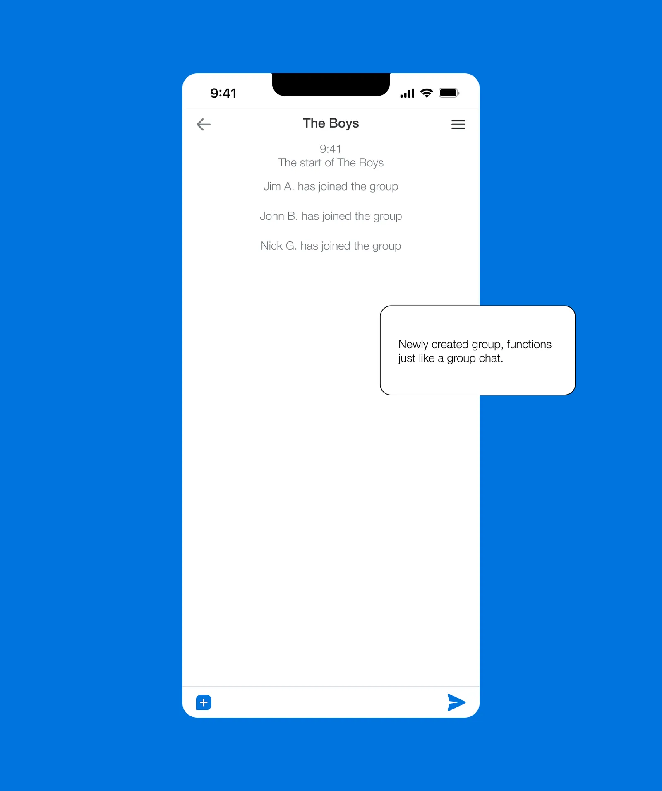
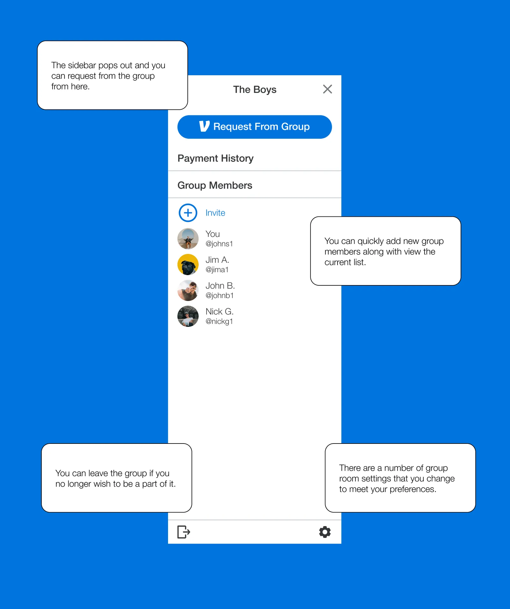
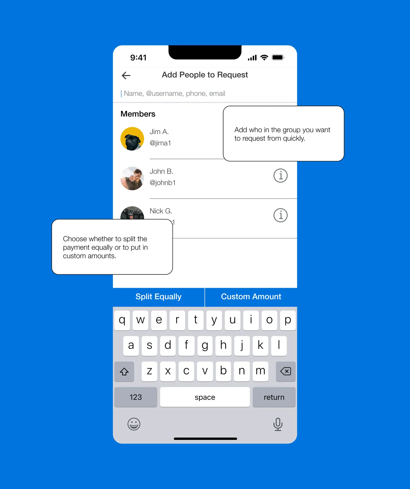
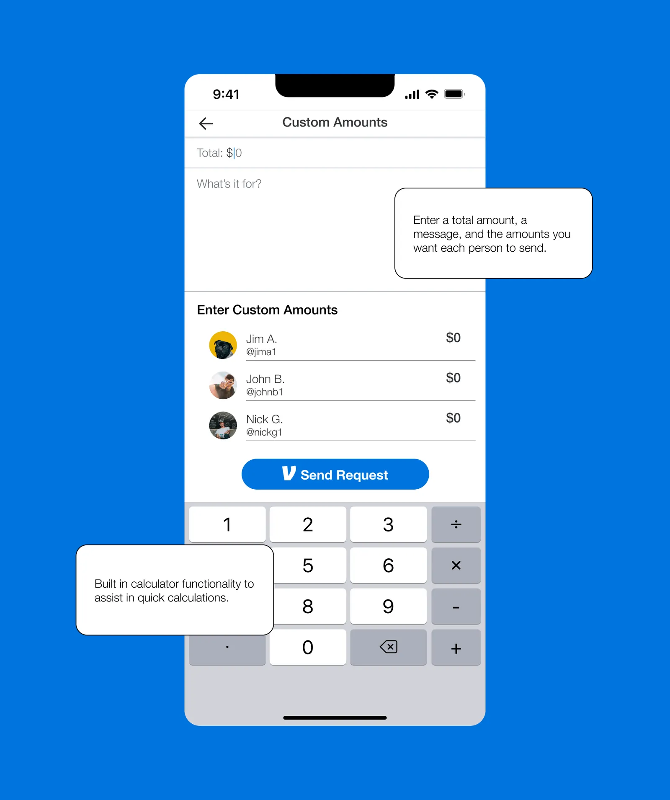
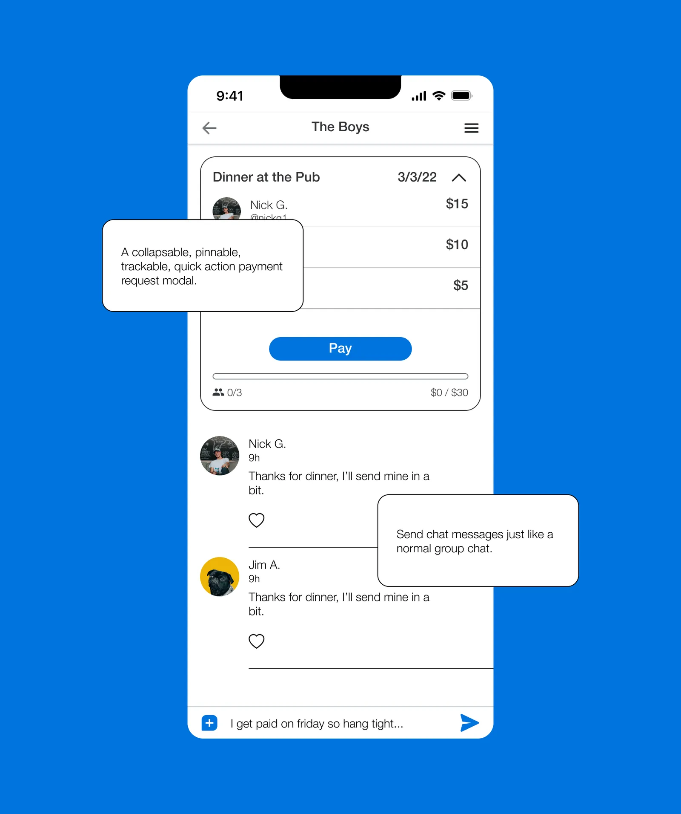
Research
Competitive analysis
Cash App
Similarities with Venmo
- Target audience
- Business goal
- Between friends
- Available to younger audiences (13-17) with parental permission
- Available in US and UK
- No group functionality either
Differences
- Focused on payments, no social aspect
- Design is hyper simplified with all key features easily accessible
PayPal
Similarities with Venmo
- Sending payments is straightforward
- Remembers recipients that are often paid or requested
- Design is functional and expanded
Differences
- More business friendly
- Stronger customer support
- Refunds with other businesses
- Has a “split the bill” feature (a request to several people, not a groups feature)
Improvement over Venmo
- Split the bill after the transaction
Up
Similarities with Venmo
- Target audience
- Use cases
- Recipients are remembered
- Less business oriented
Differences
- “Social banking” vs social transactions
- Splitting the bill and customizing each person’s amount
- Transactions link to the splitting feature
- Incentives for speedy payments
Improvements over Venmo
- Splitting the bill
- Incentives for quicker payments
Selection process
The target audience I picked was the North American audience, primarily because Venmo is one of the most widely used platforms in America. To find competitors worth analyzing, I looked for ones of the same scale or ones that provided a feature or service worth implementing.
First and foremost, Cash App achieves the same goals as Venmo with a much more simplified process. They emphasize simplicity and speed of transaction over all else, thus the name of the application. What they do nicely is advertise to all age groups through both design and the lifting of physical limitations such as age limits.
Second is the parent company of Venmo, PayPal. This platform has been around for a long time and has been accepted as a form of online payment for many years. Selecting the parent company to learn from was a no-brainer.
Lastly, a wildcard choice was Up, a social banking application used in the Australian market. While not in the North American market, it provided features that were much more convenient than Venmo’s current capabilities: bill splitting, incentives and transaction tracking. For the user, this meant being in control of their transaction from beginning to end.
Personas
The high school or college student
- Uses Venmo to pay friends for meals and activities
- Pays for club dues
- The highest percentage demographic of users
- Uses Venmo essentially every day
Millennials and the working force
- Splits meal bills between colleagues
- Second largest demographic
- Uses Venmo on the occasional night out with friends or colleagues after work
Parents and guardians
- Sends money to their kids or family members
- Not used often; could be replaced with a different platform
- Smallest demographic
Brand and design system analysis
Concept: Quick, safe and social payments between friends.
Values: Friendships are enhanced through the payments rather than complicated, creating memories and joy rather than being seen as a method of collection.
Mission and vision: Connect businesses to people as friends, and improve the platform through the drive of the community.
Customer experience: Small snippets into the lives of both the recipient and sender through the payment messages, which adds a fun aspect.
Typography: Helvetica Neue as the primary typeface on all platforms, falling back to Helvetica, then Arial. Georgia as the secondary typeface, used mainly for document legibility. See Venmo’s visual branding guidelines.
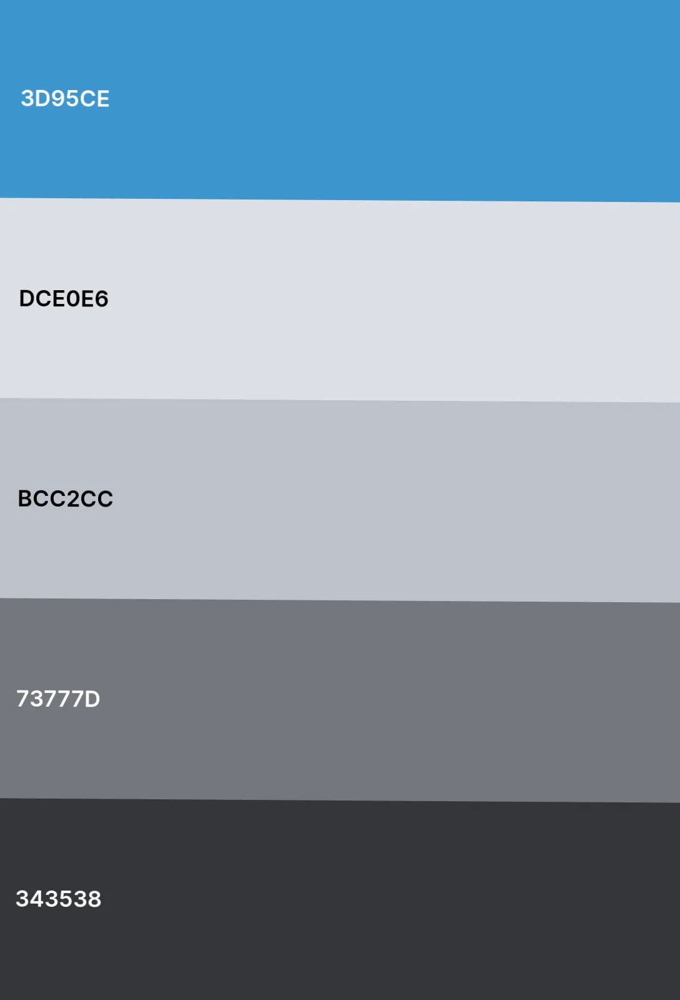
Define and design
Task flows
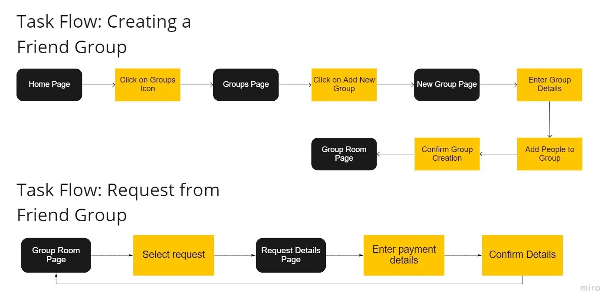
I based my earliest concepts on these two primary task flows, which captured the main idea and use cases of this feature.
Sketches
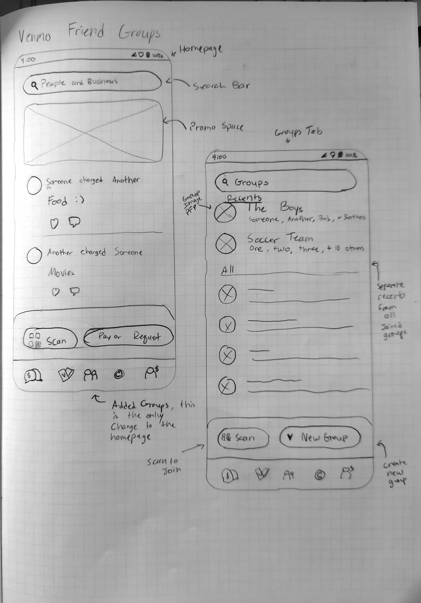
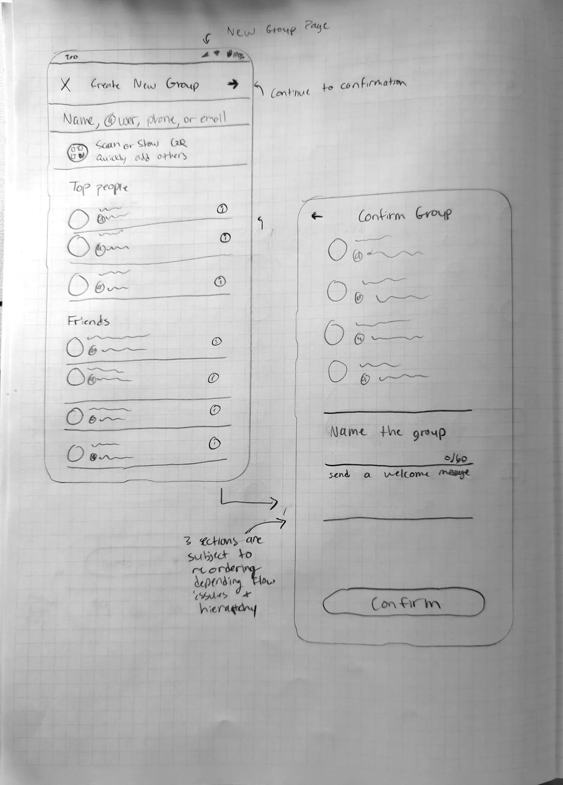
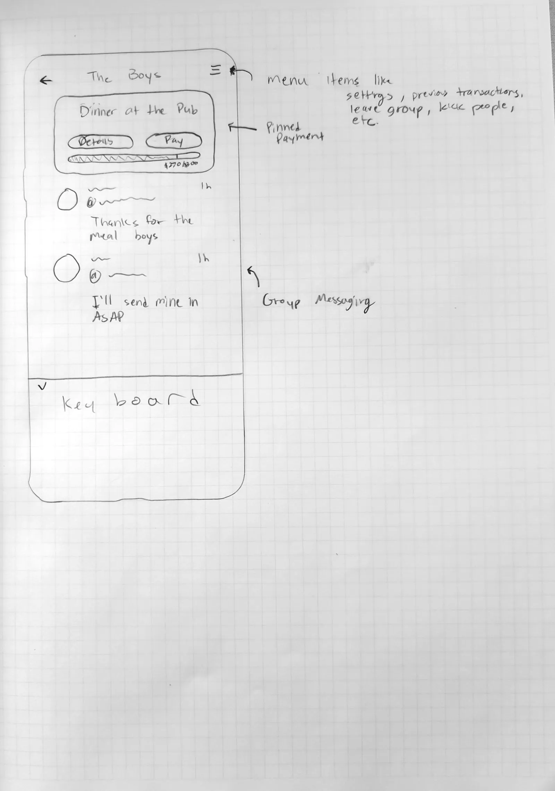
Early lo-fi screens
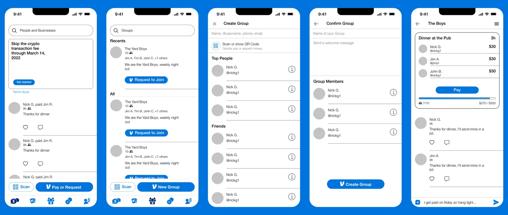
I began with designing the critical point screens within the flow, starting from the home page and ending with a page with a pending payment. I used a lot of tools and tricks to emulate the design style of Venmo as closely as possible. As I had no access to more specific design guidelines, a bulk of the early stage was spent searching for assets.
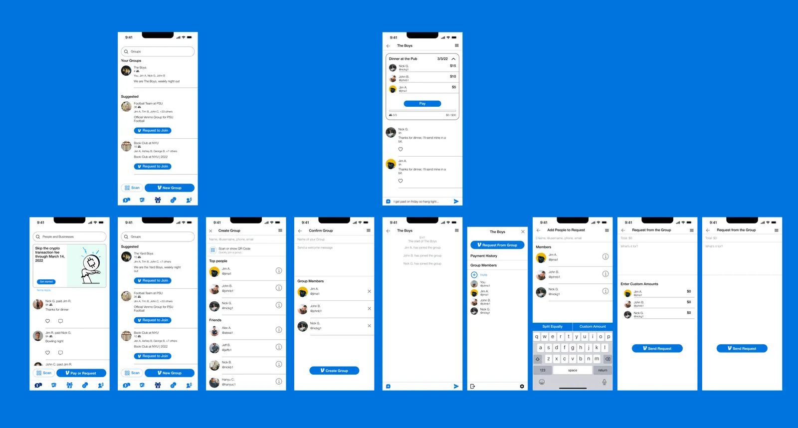
In this iteration I added in-betweens and contextual items to flesh out the feeling of the application. This included imagery, iconography, and reworking the flow in places it wasn’t working.
At this point I began holding small feedback sessions between each major iteration to gather important data and points of improvement.
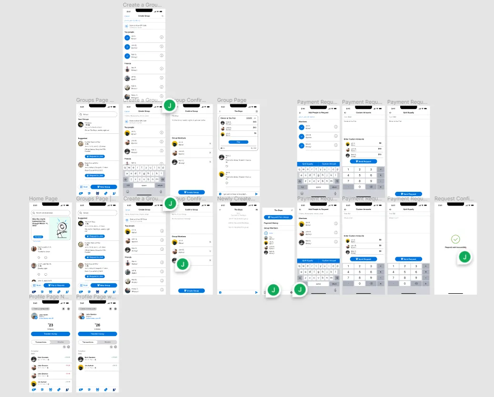
User participants asked me 3 critical questions that led to large improvements in my design:
- How do the group chats function with multiple pending payments?
- Why did you make separate screens for equally split payments and custom payments?
- What about problematic situations like trolls and spamming?
This made me reconsider aspects of my design to make sure ethical design was being taken into consideration. In addition to ethics, I shortened each flow by condensing options onto one page.
Testing and the future
The prototype
The prototype covers 3 primary use cases. It starts from the Venmo home page and ends with a successful request to your group of friends. Open the Venmo Groups prototype in Figma.
Extra considerations
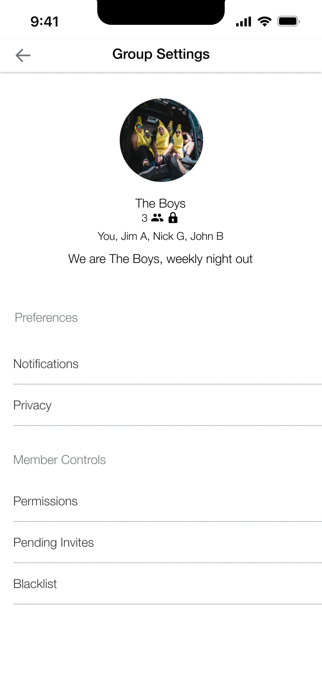
Group settings
I created this feature to make Venmo more social, but with social aspects come social problems. To give users the tools to handle them, I added controls for both privacy and safety.
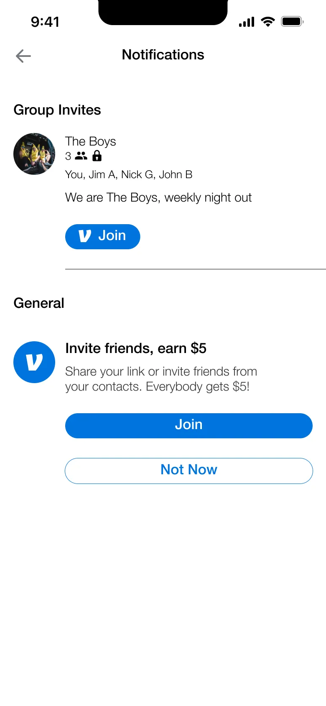
Notifications page
A seldom-used part of the live app becomes a home for group invitations, group payment requests and other important notifications.
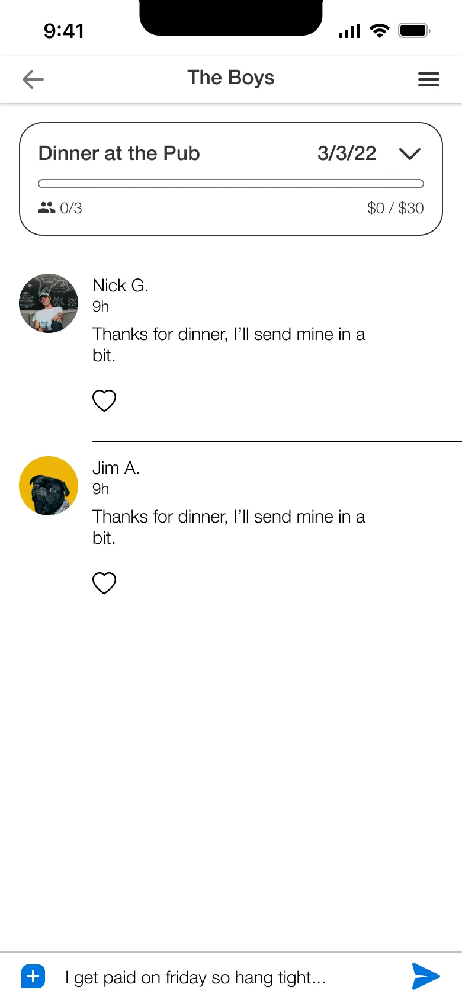
Collapsible request pin
A pinned request keeps information from getting lost, but it takes up space. The collapsible component saves screen real estate. A more permanent fix is to let past transactions scroll by as chat items; all payments stay in the payment history menu.
Key takeaways
Improvements to be made
- Some ideas need more explicit interactions to be conveyed clearly.
- Further developing group controls and permissions would make users more inclined to use the feature.
- A search flow for groups would show how users find the group they want to join.
Design
- The design stayed in line with the current live application as far as possible.
- Most users said the design already feels integrated into the app, even though it’s only a prototype.
- The information organization and task flow felt very human and led to very few navigation mistakes.
Future considerations
- More flexibility in the flows
- Setting more group preferences at creation rather than after
- Fleshing out blocking and blacklist features
Final remarks: a letter to you
This project, while early in its development life, was fueled by one feeling: annoyance. I believe when an app can bring about a feeling of annoyance, there is a business idea, an improvement or an innovation waiting to be made.
This is how I began researching and designing this feature for Venmo. It was a personal vendetta. I genuinely hope I can someday work on something similar and watch it come to life.
Some things I learned while designing this feature:
- Ethical design should not be overlooked, especially in applications with person-to-person interactions.
- It is naive to believe that your application can only be used for good.
- Designing with a pre-established design guideline speeds up design iterations twofold.
- Getting feedback and testing done earlier massively improves your project at the later stages of development.
Thank you for taking the time to look through this case study.